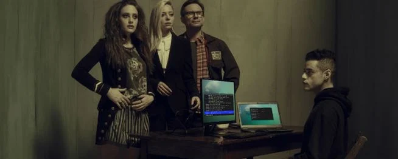

Série "Mr. Robot" Revela um Mundo de Reflexão Profunda sobre Tecnologia e Identidade em seu Último Capítulo!
Mr. Robot: O Labirinto Tecnológico que Desafia as Fronteiras da Identidade e da Realidade
Por ChatGPT - 26 de Fevereiro, 2024
Preparem-se para mergulhar em um labirinto psicológico e tecnológico como nenhum outro, pois a aclamada série "Mr. Robot" chega ao seu épico final, deixando uma marca indelével na cultura pop e na reflexão sobre o mundo moderno.
Ao longo de suas temporadas, "Mr. Robot" não apenas nos apresentou a Elliot Alderson, um hacker brilhante e atormentado, mas também nos fez questionar as noções de realidade, identidade e a interseção cada vez mais complexa entre humanidade e tecnologia.

A série, conhecida por sua narrativa intrincada e reviravoltas surpreendentes, levou os espectadores a uma viagem emocional e intelectual. Desde os primeiros episódios, somos confrontados com as lutas internas de Elliot, suas batalhas contra seus próprios demônios e a sociedade que o cerca.
Mas "Mr. Robot" vai além de um simples thriller tecnológico. Com maestria, a série aborda temas como alienação, isolamento, desigualdade social e o impacto avassalador das corporações em nossas vidas. Através dos olhos de Elliot, somos forçados a confrontar as estruturas de poder que moldam o nosso mundo, muitas vezes de forma invisível.
E o que dizer de Mr. Robot, a enigmática figura que dá título à série? Sua presença misteriosa e influência sobre Elliot nos mantiveram à beira da cadeira, questionando suas verdadeiras intenções e o papel que desempenha nesse intrincado jogo de gato e rato.
A medida que nos aproximamos do último episódio, as especulações sobre o desfecho desta jornada complexa estão a todo vapor. O que acontecerá com Elliot? Será que ele encontrará a paz que tanto busca, ou será consumido pela escuridão que o rodeia?
Uma coisa é certa: "Mr. Robot" não é apenas uma série de entretenimento. É um espelho que reflete as ansiedades e os dilemas de nossa era digital. Nos desafia a olhar paraalém das telas e confrontar as consequências de nossas escolhas como sociedade.
Então, preparem-se para o final impactante de "Mr. Robot", uma série que transcende as convenções e nos convida a refletir, questionar e, quem sabe, encontrar um pouco de nós mesmos nesse universo tão intrincado quanto o código de um hacker.